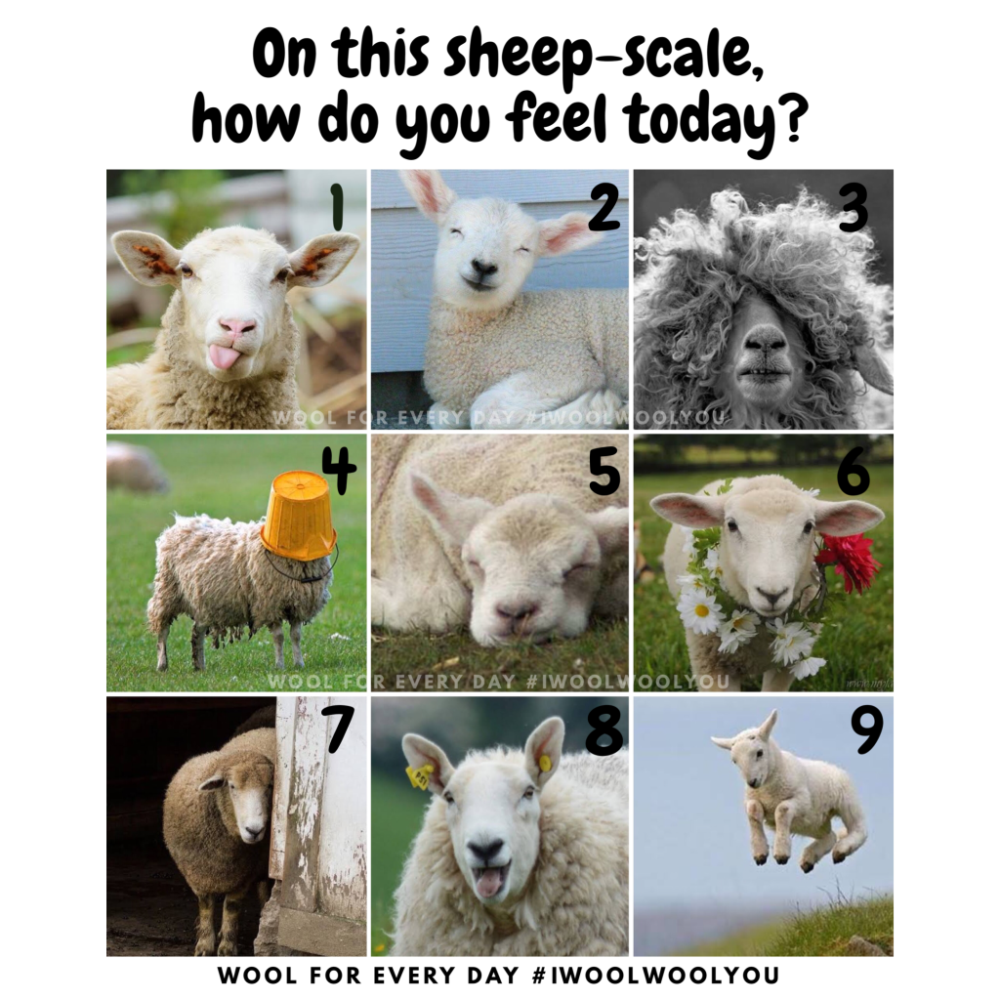
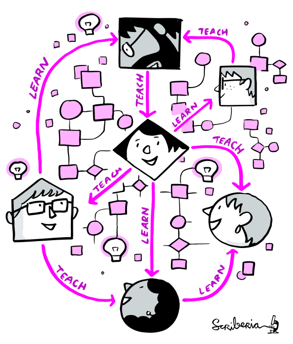
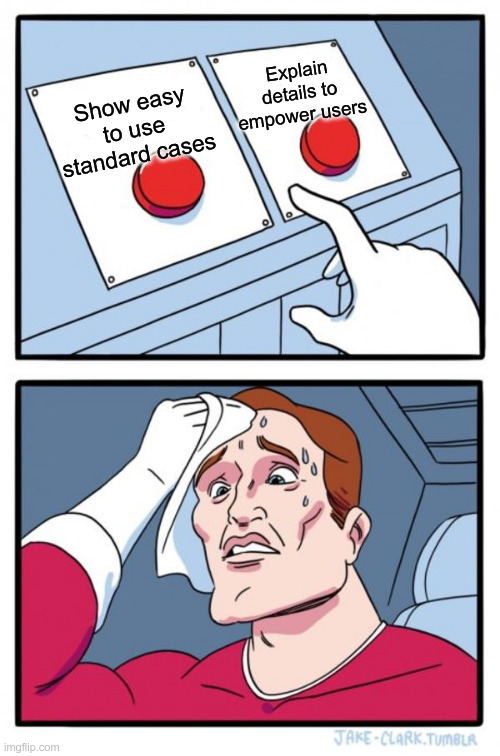
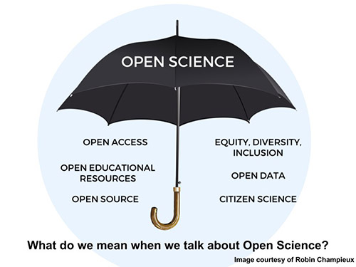
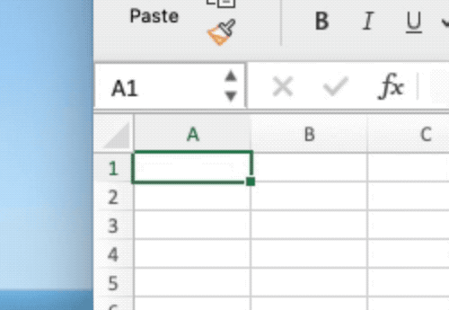
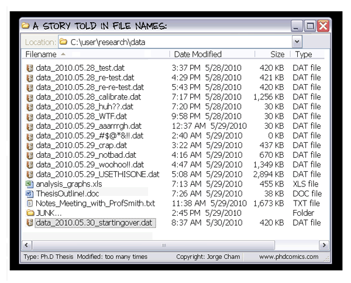
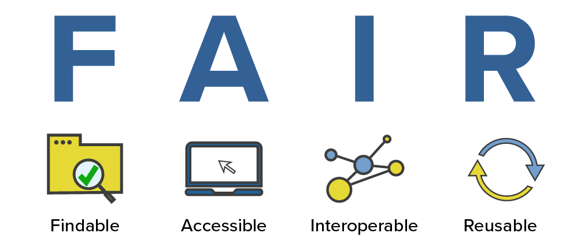
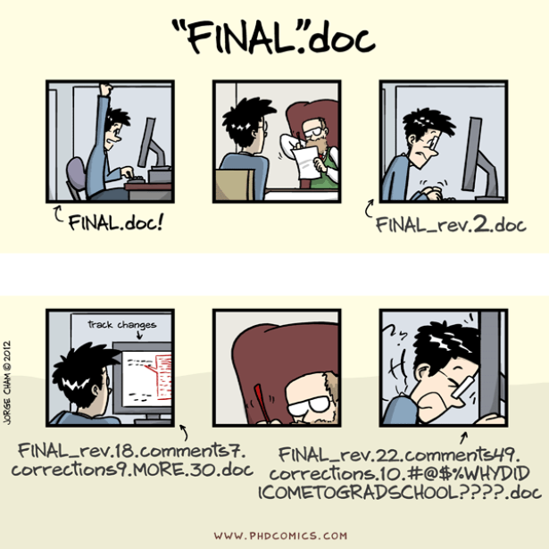
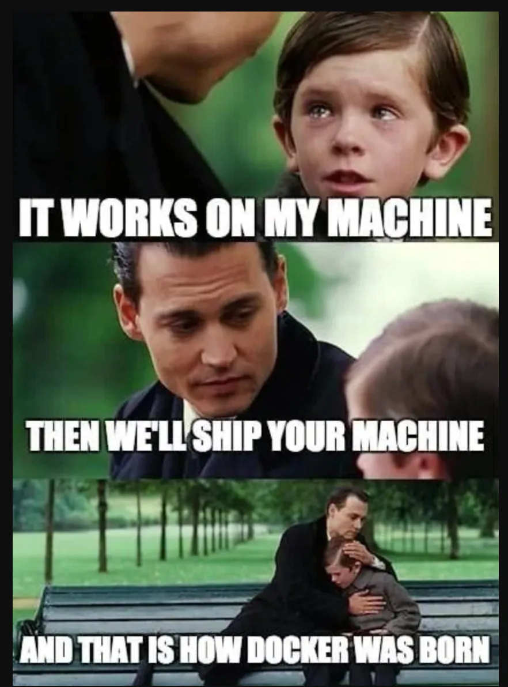

![]()
| Day | Date | Time | Title |
|---|---|---|---|
| 1 | 2026-05-07 | 09:00 - 09:30 | Welcome and Introduction to Research Data Management |
| 1 | 2026-05-07 | 09:30 - 10:30 | Project & Data Organization |
| 1 | 2026-05-07 | 10:30 - 11:30 | Data Management Plans (DMPs) |
| 1 | 2026-05-07 | 11:30 - 12:30 | Lunch Break |
| 1 | 2026-05-07 | 12:30 - 13:30 | Command Line |
| 1 | 2026-05-07 | 13:30 - 14:30 | Best practices for rectangular data |
| 1 | 2026-05-07 | 14:30 - 16:00 | Brain Imaging Data Structure (BIDS) |
Introduction to Research Data Management
Research Data Management for Psychology and Neuroscience
Course at Julius-Maximilians-Universität Würzburg, RTG 2660: Approach-Avoidance
Slides | Source

09:00
1 Logistics & Admin
About
Me
📈 Now: Senior Specialist for Data & AI in the public sector at PD - Berater der Öffentlichen Hand
🧑🔬 Before: Postdoctoral Researcher at the Institute of Psychology at the University of Hamburg
🎓 Education: BSc Psychology & MSc Cognitive Neuroscience (TU Dresden), PhD Cognitive Neuroscience (MPIB)
🔬 Research: I studied the role of fast neural memory reactivation (“replay”) in the human brain using fMRI
🔗 Contact: You can connect with me via email, BlueSky, Mastodon, GitHub or LinkedIn
ℹ️ Info: Find out more about my work on my website, Google Scholar and ORCiD
This course
💻 Materials: All materials are available at https://lennartwittkuhn.com/rdm-course-jmu-rtg-2660-2026/
📦 Software: Reproducible materials are built with Quarto and deployed to GitHub Pages using GitHub Actions
Source: Code is available on GitHub at https://github.com/lnnrtwttkhn/rdm-course-jmu-rtg-2660-2026/
🙏 Contact: I am happy for any feedback or suggestions via email or GitHub issues. Thank you!
Who are you?
- Your name?
- Your preferred pronouns?
- Your research?
- Your mood on a sheep scale?

Course overview
- Date: May 7th & 8th 2026
- Time: 9:00 to 16:00
- Room: Thursday: Room 318 | Friday: Room 213
- Instructor: Dr. Lennart Wittkuhn
- Event: Course (two-day)
- Language: English
What will the average session look like?
Each day consists of 6 main sessions (ca. up to 60 minutes each)
- Demonstration (up to 15 minutes):
The instructor introduces the topic and gives a short demonstration of the main tools and practices.
- Exercises (up to 30 minutes):
Course participants work on hands-on exercises and assignments.
- Discussions (up to 15 minutes):
Course participants and instructor collectively address any questions related to the session’s content.
This is a workshop.
Experiment!
Ask questions!
Discuss!
Schedule
Day 1
Day 2
| Day | Date | Time | Title |
|---|---|---|---|
| 2 | 2026-05-08 | 09:00 - 09:30 | Introduction to Version Control |
| 2 | 2026-05-08 | 09:30 - 11:30 | Version Control of Data with DataLad |
| 2 | 2026-05-08 | 11:30 - 12:30 | Lunch Break |
| 2 | 2026-05-08 | 12:30 - 13:30 | Data publication |
| 2 | 2026-05-08 | 13:30 - 15:30 | Data Infrastructure: Nextcloud |
| 2 | 2026-05-08 | 15:30 - 16:00 | Summary & Outlook |
Course website
Pair Programming (variant)
- Find and say hello to your nearest desk neighbor
- Complete the exercises together, help each other out, etc.

Let’s do the splits

Code of Conduct
During this course, we want to ensure a safe, productive, and welcoming environment for everyone who attends. All participants and speakers are expected to abide by this code of conduct. We do not tolerate any form of discrimination or harassment in any form or by any means. If you experience harassment or hear of any incidents of unacceptable behavior, please reach out to the course instructor, Dr. Lennart Wittkuhn (lennart.wittkuhn@tutanota.com), so that we can take the appropriate action.
Unacceptable behavior is defined as:
- Harassment, intimidation, or discrimination in any form, verbal abuse of any attendee, speaker, or other person. Examples include, but are not limited to, verbal comments related to gender, sexual orientation, disability, physical appearance, body size, race, religion, national origin, inappropriate use of nudity and/or sexual images in public spaces or in presentations, or threatening or stalking.
- Disruption of presentations throughout the course. We ask all participants to comply to the instructions of the speaker with regard to dedicated discussion space and time.
- Participants should not take pictures of any activity in the course room without asking all involved participants for consent and receiving this consent.
A first violation of this code of conduct will result in a warning, and subsequent violations by the same person can result in the immediate removal from the course without further warning. The organizers also reserve the right to prohibit attendance of excluded participants from similar future workshops, courses or meetings they organize.
Breaks
- We will have a one-hour lunch break.
- Feel free to take short breaks in-between sessions (~ last 5 minutes) when needed.
Your survey responses
Thank you for your participation! 🙏
2 This session: Introduction to Research Data Management
Objectives
💡 You know what reproducibility is.
💡 You can argue why reproducibility is essential for research.
💡 You recognize the importance of research data management (RDM).
💡 You can explain why RDM is relevant for reproducibility and reuse of data.
💡 You can define reproducibility and explain its relationship to RDM.
3 Reproducible research
Definition of reproducibility

Current state of reproducibility in (psychological) research
Artner et al. (2021)
- Analyzed 46 articles from three APA journals in 2012.
- Extracted 232 statistical claims from these papers.
- Successfully reproduced 163 statistical results (70%).
- Focus: Reproducibility of individual statistical claims.
Hardwicke et al. (2021)
- Analyzed 25 articles published in Psychological Science (2014–2015) with Open Data Badges.
- 15 articles (60%) were fully reproducible.
- 9 out of these 15 (60%) were reproducible without author involvement.
- Focus: Study-level reproducibility.
Crüwell et al. (2023)
- Investigated 14 articles from a more recent issue of Psychological Science.
- Only 1 out of 14 articles was exactly reproducible.
- 3 additional articles were essentially reproducible with minor deviations.
- All articles had Open Data Badges.
Obels et al. (2020)
- Analyzed 62 registered reports in Psychology (2014-18).
- 36 reports (58%) shared both data and code.
- Of those, 21 (58%) were found to be reproducible.
- Focus: Impact of open science practices on reproducibility.
The issue of computational reproducibility in science
The problem
- about more than half of research is not reproducible 3
- research data, code, software & materials are often not available “upon reasonable [sic] request”
- if resources are shared, they are often incomplete
- 90% of researchers: “reproducibility crisis” (N = 1576) 4
Why?
- computational reproducibility is hard
- researchers lack training
- incentives are not (yet) aligned 5
- more …
“… accumulated evidence indicates […] substantial room for improvement with regard to research practices to maximize the efficiency of the research community’s use of the public’s financial investment.” (Munafò et al., 2017)
We need a professional toolkit for digital research!
What about Open Science?
Open science is an umbrella term for activities that aim to promote open approaches to science and research.

Note: Research can be reproducible but not open
4 Research Data Management
The Data Sharing Snafu
Exercise 1: Common challenges of research data management
To learn more about the importance of good data management, watch the video Data Sharing and Management Snafu in 3 Short Acts by Hanson et al. (2019) from NYU Health Sciences Library on the common challenges researchers face with data sharing and management. It highlights the importance of good data management practices for ensuring data can be easily found, understood, and used by others.
Your task: Watch the video and discuss aspects that went wrong.
Example: The story of Reinhart & Rogoff
2010: The research
- US economists presented Growth in a Time of Debt
- “Economic growth slows when debt > 90% of GDP”
- Used to support political austerity strategies
The problem
- Student Thomas Herndon couldn’t reproduce results
- Requested original spreadsheet from authors
- Found: selective data, odd averaging, coding errors
The resolution
- Authors shared their Excel spreadsheet
- Results became reproducible
- Basic tendency confirmed, but less dramatic
The lesson
- Awesome that they shared the research data!
- Excel … sigh
- RDM has serious implications for society
Excel: A cautionary tale
Try this exercise:
- Open an Excel Sheet.
- Set first column to date-format.
- Enter the year 2010 into cell A1.
Result: Excel renders your entry as 2nd July 1905!
More seriously …

- Common gene symbols:
SEPT2,MARCH1, etc. - ~20% of genetic research affected by Excel errors (Ziemann et al., 2016)
- “Solution”: HUGO Gene Nomenclature Committee renamed genes!
Why is Excel still used?
- Very intuitive
- Easy data entry
- Built-in functions
- Quick to work with
Recommendation
- Use Excel for data entry only
- Use or Python for analysis
- Save computations in scripts for reproducibility
Let’s avoid this

What is Research Data Management?
RDM covers how research data can be stored, described and reused (The Turing Way Community, 2022, chapter on Research Data Management)
Benefits of research data management:
- Upholding research integrity and reproducibility
- Improving research productivity
- Ensuring data accuracy, completeness, authenticity, and reliability
- Saving time and resources in the future
- Strengthening data security and reducing likelihood of data loss
- Meeting grant requirements of funding bodies
FAIR principles

FAIR stands for Findable, Accessible, Interoperable, and Reusable (Wilkinson et al., 2016)
Benefits:
- Enhanced machine readability
- Improved human readability
- Better findability
- Long-term accessibility
Key concepts for reproducibility:
- Persistent identifiers (DOIs)
- Metadata (data about your data)
FAIR principles in detail
Findable
- The first step in (re)using data is to find it!
- Descriptive metadata (information about the data such as keywords) is essential.
Accessible
- Once the user finds the data, they need to know how to access it.
- Data could be openly available but authentication procedures may be necessary.
Interoperable
Data needs to be integrated with other data and interoperate with applications or workflows.
Reusable
Data should be well-described so that they can be used, combined, and extended in different settings.
More details: https://www.go-fair.org/fair-principles/
Planning for FAIR data
Start early
- It is much easier to make data FAIR if you plan from the beginning of your research project
- Plan for this in your Data Management Plan (DMP)
- Consider FAIR principles when designing your study
Machine-readable benefits
- The FAIR principles emphasize the importance of machine-readability to find, access, and reuse data with minimal human intervention
- Essential in today’s data-driven era
FAIR ≠ Open
- Making data ‘FAIR’ is not the same as making it ‘open’
- Accessible means there is a procedure in place to access the data
- Data should be as open as possible, and as closed as necessary
Aspirational principles
- FAIR principles are aspirational: they describe a continuum of features
- They do not strictly define how to achieve FAIRness
- Think of them as guidelines, not requirements
FAIR principles beyond data
FAIR software
- FAIR principles also apply to software and code
- Research software should be findable, accessible, interoperable, and reusable
- Version control, documentation, and open licenses
Environmental sustainability
- FAIR practices can result in efficient code implementations
- Reduce the need to retrain models
- Reduce unnecessary data generation/storage
- Lower carbon footprint through better practices
Accessibility considerations
- “Accessible” in FAIR ≠ accessibility for all users
- “Actually accessible” data is easy to locate, obtain, and use for everyone
- Consider diverse user needs in your data sharing
Community efforts
- GOFAIR and Research Data Alliance (RDA)
- Many discipline-specific tools and standards available
- FAIR Cookbook for life sciences
Data organization & standards
Questions to ask yourself:
- What data are you working with?
- Which analysis pipelines are you using?
- Is there a community standard?
Why use community standards?
- Facilitate cooperation between labs
- Ensure consistency within your lab
- Make reproducibility easier
- Enhance data sharing

Data organization includes:
- Folder structure and naming
- File format choices
- Metadata documentation
- Consistent approaches
First Simple FAIR Checklist
Planning Phase (Findable + Reusable)
Active Research (Interoperable + Accessible)
Pre-Publication (All FAIR principles)
Publication (Findable + Accessible)
More challenges for reproducible scientific workflows
Version Control

{kind=link}
Computational Environments

Resources
References
Artner, R., Verliefde, T., Steegen, S., Gomes, S., Traets, F., Tuerlinckx, F., & Vanpaemel, W. (2021). The reproducibility of statistical results in psychological research: An investigation using unpublished raw data. Psychological Methods, 26(5), 527–546. https://doi.org/10.1037/met0000365.
Baker, M. (2016). 1,500 scientists lift the lid on reproducibility. Nature, 533(7604), 452–454. https://doi.org/10.1038/533452a.
Crüwell, S., Apthorp, D., Baker, B. J., Colling, L., Elson, M., Geiger, S. J., Lobentanzer, S., Monéger, J., Patterson, A., Schwarzkopf, D. S., Zaneva, M., & Brown, N. J. L. (2023). What’s in a badge? A computational reproducibility investigation of the open data badge policy in one issue of Psychological Science. Psychological Science, 34(4), 512–522. https://doi.org/10.1177/09567976221140828.
Hanson, K., Surkis, A., & Yacobucci, K. (2019). Data sharing and management snafu in 3 short acts. https://doi.org/10.6084/M9.FIGSHARE.8061722.V1.
Hardwicke, T. E., Bohn, M., MacDonald, K., Hembacher, E., Nuijten, M. B., Peloquin, B. N., deMayo, B. E., Long, B., Yoon, E. J., & Frank, M. C. (2021). Analytic reproducibility in articles receiving open data badges at the journal Psychological Science : An observational study. Royal Society Open Science, 8(1). https://doi.org/10.1098/rsos.201494.
Munafò, M. R., Nosek, B. A., Bishop, D. V. M., Button, K. S., Chambers, C. D., Percie du Sert, N., Simonsohn, U., Wagenmakers, E.-J., Ware, J. J., & Ioannidis, J. P. A. (2017). A manifesto for reproducible science. Nature Human Behaviour, 1(1). https://doi.org/10.1038/s41562-016-0021.
Obels, P., Lakens, D., Coles, N. A., Gottfried, J., & Green, S. A. (2020). Analysis of open data and computational reproducibility in registered reports in psychology. Advances in Methods and Practices in Psychological Science, 3(2), 229–237. https://doi.org/10.1177/2515245920918872.
Poldrack, R. A. (2019). The costs of reproducibility. Neuron, 101(1), 11–14. https://doi.org/10.1016/j.neuron.2018.11.030.
The Turing Way Community. (2022). The turing way: A handbook for reproducible, ethical and collaborative research. Zenodo. https://doi.org/10.5281/zenodo.3233853.
Wicherts, J. M., Borsboom, D., Kats, J., & Molenaar, D. (2006). The poor availability of psychological research data for reanalysis. American Psychologist, 61(7), 726–728. https://doi.org/10.1037/0003-066x.61.7.726.
Wilkinson, M. D., Dumontier, M., Aalbersberg, Ij. J., Appleton, G., Axton, M., Baak, A., Blomberg, N., Boiten, J.-W., Silva Santos, L. B. da, Bourne, P. E., Bouwman, J., Brookes, A. J., Clark, T., Crosas, M., Dillo, I., Dumon, O., Edmunds, S., Evelo, C. T., Finkers, R., … Mons, B. (2016). The FAIR guiding principles for scientific data management and stewardship. Scientific Data, 3(1). https://doi.org/10.1038/sdata.2016.18.
Ziemann, M., Eren, Y., & El-Osta, A. (2016). Gene name erorrs are widespread in the scientific literature. Genome Biology, 17. https://doi.org/10.1186/s13059-016-1044-7.
Footnotes
The Turing Way Community (2022), see “Guide on Reproducible Research”
The Turing Way Community (2022), see “Guide on Reproducible Research”
for example, in Psychology: Crüwell et al. (2023); Hardwicke et al. (2021); Obels et al. (2020); Wicherts et al. (2006)
see Baker (2016), Nature
see e.g., Poldrack (2019)
“Data Sharing and Management Snafu in 3 Short Acts”. The video by Hanson et al. (2019) from NYU Health Sciences Library features a cute animated panda researcher making a data sharing request to a bear researcher. It does not go well. The video aims to communicate some of the common and avoidable pitfalls of research data management in a light-hearted format. Topics include storage, documentation, and file formats. The video was produced using a tool called Xtranormal (now “nawmal”) and the characters are strangely expressive while talking in robotic text-to-speech voices with a limited range of movement. It was created and uploaded to YouTube by librarians at NYU School of Medicine in 2012 to be used for research data management education and has been included in numerous research data management courses and presentations. License: Creative Commons Attribution 4.0 International (CC BY 4.0). Reused without modifications.
RDM Course